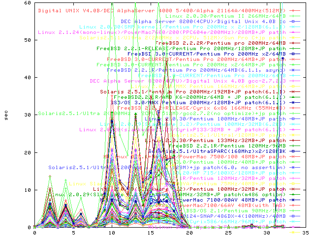
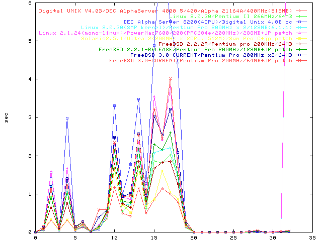

PostgreSQL の Wisconsin Benchmark
ベンチマーク結果

ベンチマーク結果(Best 10)

- Digital UNIX V4.0B/DEC AlphaServer 4000 5/400/Alpha 21164A/400MHz(512MB)[2454]
- Linux 2.0.30/Pentium II 266MHz/64MB[2089]
- DEC Alpha Server 8200(4CPU)/Digital Unix 4.0B cc[2477]
- Linux 2.0.30(SMP kernel)/Pentium Pro 200MHz x 2/128MB(6.1.1)[2423]
- Linux 2.1.24(mono-linux)/PowerMac7600/200(PPC604e/200MHz)/288MB+JP patch[2272]
- Solaris2.5.1/Ultra 2(200MHz x 2CPU, 512M)/Sun Pro C+jp patch[2044]
- FreeBSD 2.2.2R/Pentium pro 200MHz/64MB[2440]
- FreeBSD 2.2.1-RELEASE/Pentium Pro 200MHz/128MB+JP patch[2114]
- FreeBSD 3.0-CURRENT/Pentium Pro 200MHz x2/64MB[2030]
- FreeBSD 3.0-CURRENT/Pentium Pro 200MHz/64MB+JP patch[2030]
- FreeBSD 3.0-CURRENT/Pentium Pro 200MHz x2/64MB+JP patch[2030]
- FreeBSD 2.2.1R/Pentium Pro 200MHz/64MB(6.1.1, async)[2255]
- FreeBSD 3.0-CURRENT/Pentium Pro 200MHz/64MB[2030]
- DEC Alpha Server 8200(4CPU)/Digital Unix 4.0B gcc-2.7.2.3[2477]
- Linux 2.0.30/MMX Pentium 166MHz/64MB+JP patch[2000]
- Solaris 2.5.1/Pentium Pro 200MHz/192MB+JP patch(6.1.1)[2294]
- FreeBSD2.2.1R/AMD K6-200MHz/64MB + JP patch(6.1.1)[2457]
- BSD/OS 3.0/MMX Pentium 200MHz/128MB+JP patch(6.1.1)[2267]
- FreeBSD 2.2.2-RELEASE/Cyrix 6x86 166MHz (55MHz*3)[2182]
- Solaris2.5.1/Ultra 2(200MHz x 2CPU, 512M)/gcc2.7.2(no optimize)+jp patch[2044]
- Linux 2.0.30/Pentium 100MHz/48MB+JP patch[2031]
- Linux 2.0.29(Slackware 3.2)/Pentium 100MHz/32MB(6.2b8)[not avail]
- Linux 2.0.20(slackware 3.2)/CyrixP133/32MB + JP patch(6.1.1)[2468]
- Soalris2.5.1/Ultra1/128MB+JP patch[1979]
- Linux 2.0.30/Pentium 133MHz/32MB+JP patch[1988]
- FreeBSD 2.2.1R/Pentium 120MHz/96MB[2440]
- Solaris2.5.1/UltraSPARC(168Mhz)x2/128MBK[2001]
- MkLinux DR2.1+Update3/PowerMac 7500/100 48MB+JP patch[2101]
- BSD/OS 3.0/Pentium 100MHz/40MB+JP patch[2196]
- Solaris2.5.1/Ultra 2(200MHz x 2CPU, 128M)+jp patch(6.0, no assertion)[1375]
- HP-UX B.10.20/HP 715/100XC/128MB+JP patch[2236]
- FreeBSD 2.2.1R/Pentium 120MHz/32MB+JP patch[2206]
- Linux Slackware-3.1.0/Cannon INNOVA/Pentium 75MHz/40MB+JP patch[2054]
- Linux 2.0.29(Slackware 3.2)/Pentium 100MHz/32MB+JP patch[2168]
- Linux 2.0.29(Slackware 3.2)/Pentium 100MHz/32MB+JP patch(m486 option)[2168]
- MkLinux DR2.1+Update3/PowerMac 7100/80AV 48MB+JP patch[2274]
- MkLinux DR2.1/PowerMac7100/66AV 48MB(with TAS)[not avail]
- BSD/OS 2.1/Pentium 90MHz/16MB[2440]
- FreeBSD 3.0-970124-SNAP/486DX-4(100MHz)/40MB[2003]
- Linux 2.0.0(Slackware3.0)/Cyrix586/66MHz/96MB+JP patch[2164]
- MkLinux DR2.1+Update3/PowerMac 7200 48MB[not avail]
- AIX V4.2/RS/6000 25T/PowerPC 601 66 MHz(Memory 64MB Disk 4GB)/compiler: AIX CC (C-Set ++)[2433]
- MkLinux DR2.1/PowerMac7100/66AV 48MB(no TAS)[not avail]
- Linux 2.0.0 (Slackware 3.1)/IBM ThinkPad 701C with AMD 5x86 133MHz/24M byte+JP patch(6.1.1)[2318]
- HPUX9.05/HP9000/712(60MHz)/32MB+JP patch[2028]
- Linux 2.0.18(RedHat 4.0)/486DX 33MHz/16MB+JP patch[2217]
- HPUX9.05/HP9000/712+JP patch[2075]
- SPARC/Linux 2.0.30/MicroSparc 50MHz/32MB[2078]
- Solaris2.5.1 MicroSparc85MHz/32MB +JP patch(6.1.1)[2464]
- Solaris 2.5.1/UNISYS US Model110(SS10)/128MB+JP patch[2291]
- SunOS 4.1.4-JLE/Sparc10/gcc 2.7.2.1+JP patch[2071]
- Linux 2.0.29/Compaq LTE/Lite 4/33C(486DX 33MHz/12MB)[1998]
- SunOS 4.1.3-JLE1.1.3_U1/JCC JS5/70/32MB+JP patch[2081]
- FreeBSD 2.2.1R/486DX 33MHz/36MB+JP patch(6.1.1)[2225]
- SunOS4.1.3 + JLE 1.1.3/SS10[2181]
- SunOS4.1.3+JLE 1.1.3/AS4070(SuperSPARC)/48MB+JP patch[2246]
 [return to the benchmark top page]
[return to the benchmark top page]